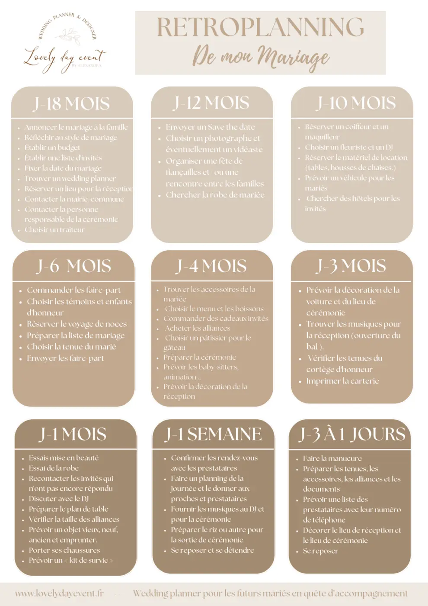
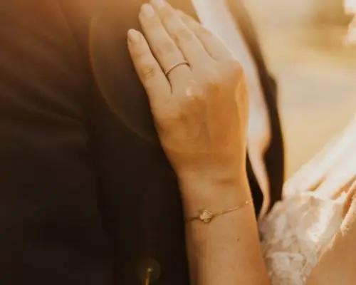
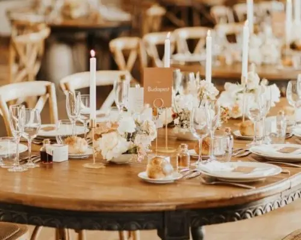
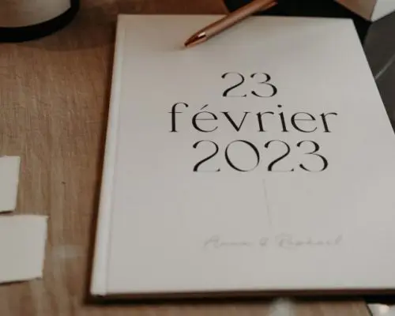
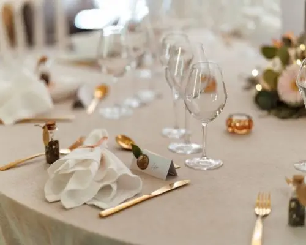
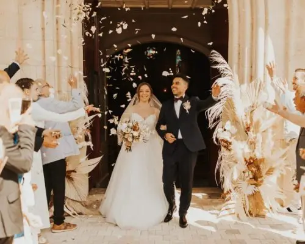
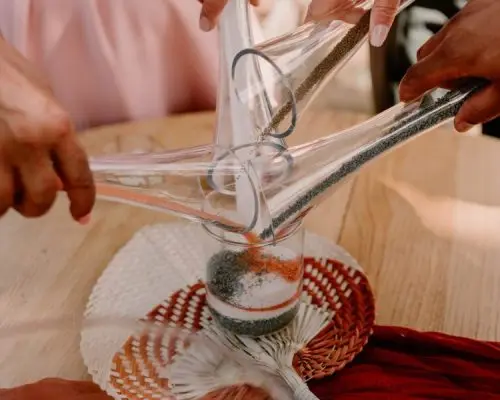
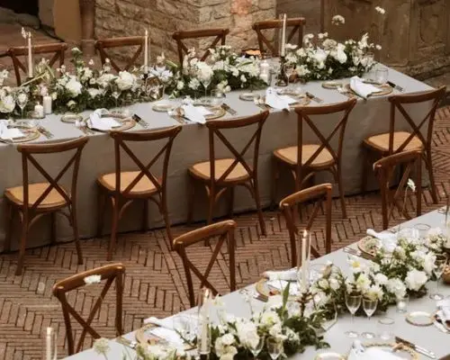
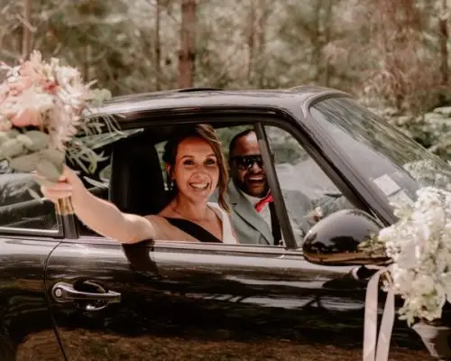

It's all about the timeline!
If you are here, one of you has finally popped the question, and it's time to start the preparations!
First of all, congratulations!
For many of us, getting married is a life goal, and now it's finally your turn!
You are probably very excited, and that's perfectly normal! But alongside that excitement there is probably also a little twinge of stress about organising such a special day, and let me reassure you, that's normal too!
You are probably asking yourselves a million questions about the planning, and realising that the list of things to do and think about is far too long. In short, you no longer know where to start or which way to turn.
That's why I've decided to give you a hand with your preparations by sharing a month-by-month wedding timeline, made by Lovely Day Event.
As a wedding planner, I couldn't live without this revolutionary tool (and I choose my words carefully): the wedding timeline.
Today I'll show you the one I use with most of my couples. It has proved its worth because so far (touch wood) everything has always gone wonderfully.
For the latecomers among you, or the hopelessly stressed, remember that I am first and foremost a wedding planner.
So you can call on me to organise your wedding from A to Z.


Announce the wedding to your close family
You've just said yes and all you want is to tell the whole family and your guests, so don't hesitate to do it quickly!
Save the dates will help you let your loved ones know as soon as you have a date. By text, email, phone or stationery, what matters is that they are told and can block the date in their diary.

Think about the style of your wedding
You can start thinking about the atmosphere you want (warm, chic…) as well as the kind of theme you like, and believe me, there is plenty of choice (country, boho, elegant, Provençal…). Colours matter too. You might be tempted by warm or natural tones. You have lots of options, and it is never too early to start.

Keeping control of your budget is essential
When booking your venue, you have probably started thinking about a budget. As you no doubt know, a wedding is expensive, so it is essential to manage money that has often been saved over years. You need to set a budget not to exceed, so you aren't caught out during the planning by unplanned spending.
How far in advance should you plan your wedding?
To begin with, I would advise you to start well in advance: 18 to 12 months before your planned wedding date is ideal. That way you'll have time to plan everything without being rushed, you'll have plenty of choice and you can draw up your lists. If I may say so, that's a real luxury, because Bordeaux's châteaux and estates are in great demand in the summer season.
This is one of the first things I advise you to look into, because your wedding date may well end up being decided by your reception venue's availability. Alongside the venue, it is also important to check the availability of the church or town hall to make sure everything is free on the date you want. Be careful: some of the most sought-after venues need to be booked as much as two years ahead. Don't get caught out, although for the rest of the preparations 12 months will be enough.
Le lieu
It is vital to set your wedding date quickly. As mentioned above, venue availability can sometimes be tricky, but you also need to think of your guests, because finding a date when all your loved ones are free isn't always easy.
La date du mariage

Ah, choosing the caterer, surely one of the most important choices you'll make! And that's only natural: eating well at your wedding is essential! But it is rarely a simple choice, with so many people to please… just remember that above all, it has to please you. And just like prestigious venues, good caterers get booked quickly, so the earlier you start, the more choice you'll have.
Le traiteur
At last it's time to tell all your guests that you're getting married and that they have the privilege of being invited (no less)! Joking aside, the earlier you tell your guests, the more likely they are to be there. And let's be honest, choosing the perfect invitation is rather fun, and if you're creative you'll love making it too. If not, or if you simply don't have the time, your wedding planner will be delighted to take care of it.
Le faire-part
Start early! Choosing the DJ is a crucial step in planning your wedding, to guarantee a memorable, festive atmosphere all evening. Ask the DJ for demos of previous performances. This will give you an idea of their mixing style, their ability to read the crowd and their professionalism. Make sure you discuss every logistical detail with the DJ, such as the equipment needed, power requirements and set-up and take-down times. Also clarify the cost of their services and what is included in the package. Make sure the DJ has wedding experience and can adapt to different kinds of audience!
Le DJ

Hair and make-up for your wedding are an important step in feeling confident and radiant on the big day. Call on hair and make-up professionals to enhance your natural beauty while staying true to your personal style. During the trials, communicate your preferences clearly and don't hesitate to experiment with different looks until you find the one that suits you perfectly. Choose a look that will last all day and evening, using quality products and planning touch-ups if needed. And remember that true beauty comes from within, so relax, enjoy every moment and let your inner light shine on this magical day.
La mise en beauté
What would a wedding be without guests? Big or small, it is important to decide who to invite: family, friends, colleagues, acquaintances? Sometimes it's hard to know where to stop, and the list can quickly grow from 70 to 170 or more. That's why it is essential to set your budget beforehand. If you can't stop yourselves, it will. You also need to watch how many people your venue can hold, because even if the estate is beautiful and large, there are still limits. You can also choose your venue to suit the number of people you want to invite; there are no real rules.
La liste d'invités
Dreaming of a beautiful wedding, with quality services and breathtaking decor? I can give you no better advice than to turn to a wedding planner. By calling on my services, you can approach the planning of your wedding far more calmly. I will be there for you at every stage of this wonderful adventure, right up to the big day, so you can have the most beautiful day of your life.
La wedding planner
Between a religious or a symbolic ceremony, your heart will tell you which to choose. For a symbolic ceremony, if you want one that moves the whole gathering to tears of laughter or joy, what you need is an officiant to craft a ceremony worthy of you. Officiants take the time to get to know you and your story and make your wedding day THE emotional moment. When I talk about officiants, I mean professionals, but you can also choose someone close to you to officiate. What a mission!
La cérémonie

Haven't we all been dazzled at least once by a wedding photo or video? I'll answer for you: yes! And even though the dress and the bride (you too, sir) play the leading roles, the person behind the lens often has a lot to do with it. Capturing beautiful wedding photos (discreetly) is not a gift everyone has. There are so many styles of photography and video that the choice is huge, and the best photographers and videographers get booked quickly. Meet these artists and you'll see how important the connection is to feeling at ease in front of the camera.
La photo - La vidéo
Searching for the wedding dress is often one of the most exciting stages for the bride. It is the moment to give free rein to your creativity and personal style. Whether you dream of a sparkling princess gown, a flowing boho dress or an elegant, classic outfit, the perfect dress is waiting for you. Browse wedding magazines, explore specialist boutiques and don't hesitate to book appointments at bridal salons to try different styles and find the one that flatters you and matches your vision. As for the groom's suit, it is just as important to find the perfect outfit for your style and the atmosphere of your wedding. Whether you choose a classic suit, an elegant tuxedo or something more relaxed like a made-to-measure suit, make sure you feel confident and comfortable on the big day. Don't forget the accessories! Finally, remember that the key to finding the perfect wedding dress, suit and accessories is to stay true to yourself and your personal style.
Le cortège
Floral design and decor are an essential part of the wedding's style, bringing a touch of elegance, colour and romance to your special day. Choose flowers that reflect your style and the theme of your reception, whether lush arrangements of roses and peonies for a classic feel or wild bouquets of meadow flowers for a boho look. Working with an experienced decorator will let you create harmonious spaces with stunning floral arrangements, centrepieces and ceremony arches that will captivate your guests and create an unforgettable atmosphere. Be sure to consider which flowers are in season and to work in harmony with the colours and style of your venue for perfect visual coherence.
La décoration


As your wedding preparations draw to a close, crucial elements such as the seating plan, the music list and the schedule for the big day come into play to make sure your celebration runs smoothly. The seating plan needs special attention so your guests feel comfortable and well placed, encouraging a convivial atmosphere. The music list gives you the chance to create a personalised soundtrack reflecting your tastes and your story, with special songs for the ceremony, the drinks reception and the reception. Finally, the schedule for the big day is the common thread of your event, detailing every key moment from the morning preparations to the last dance of the night. By organising these elements carefully, you can be sure your day will flow smoothly, leaving room for precious memories that will last a lifetime.
Remember that your wedding planner is there to accompany you at every stage, offering advice, support and expertise to make your wedding an unforgettable event.
So may your special day be filled with love, joy and precious moments you will cherish for ever. Congratulations on this important milestone in your life, and may your wedding be the start of a wonderful, enriching adventure together!Lovely Day Event offers several services
Wedding planning
I step in at every stage of your preparations and guide you through your choices, bringing ideas and suggestions so that your wedding looks like no one but you.
Wedding design
Creative and passionate, I am a certified Wedding Designer and I create a scenographic atmosphere that matches the theme of your wedding.
On-the-day coordination
I will be the conductor of your day, managing the suppliers, the set-up of your decor and the smooth running of this beautiful day.